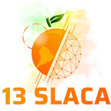

SLACA 2019

Anais do simpósio Latino Americano de Alimentos
Anais do 13 Simpósio Latino Americano de Ciência de Alimentos
ISSN: 1234-5678
PT-BR
ENG
ESP
CHI
Bem vindo!
test@teste@gmail.com
Análise sensorial de preparações funcionais desenvolvidas para escolares
entre 09 a 15 anos, município de campinas/SP